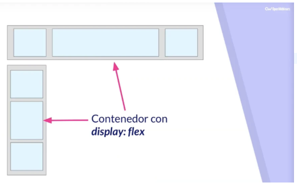
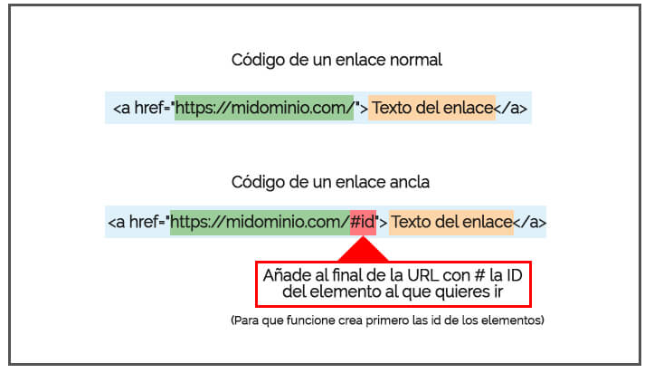

El propósito fundamental de este sitio, es brindar el conocimiento y las herramientas necesarias para el manejo básico y adecuado de HTML, como requisito fundamental para nuestro proceso de formación y conocimiento para desarrollarnos como futuros ingenieros de sistemas. En esta oportunidad abordaremos los siguientes temas; Flex Box, Listas y Enlaces. Trataremos sus función, usos y caracteríasticas mas importantes de estas herramientas.
FLEX BOX
Qué es Flex
Flex es uno de los nuevos valores HTML5 para propiedad CSS display, que nos permite maquetar nuestras páginas web de una manera mucho más fácil de lo que se hacía con la forma tradicional, en la que utilizábamos propiedades como float o position, entre otras.
Por qué Flex
Se llama Flex porque tenemos un contenedor, llamado contenedor Flex, que es el elemento que contiene la propiedad display:flex.
Desde ese contenedor vamos a poder especificar la alineación de los elementos que hay dentro, el tamaño de los elementos que contienen y distribuir el espacio restante que hay entre los elementos del contenedor Flex, y todo esto en una sola dirección, ya sea una horizontal o vertical. Es decir, podemos distribuir los elementos que contiene la etiqueta sin poner nada dentro de esos elementos.
Flex a nivel visual
Vamos a ver dos ejemplos para ver cómo funciona de verdad:
Ambos son contenedores Flex, el primero es un contenedor Flex a nivel horizontal que contiene tres elementos flexibles, el segundo es un contenedor Flex a nivel vertical que contiene tres elementos flexibles.
Únicamente dando propiedades al contenedor Flex podemos alinear todos los elementos que están dentro del mismo.
Aspectos a tener en cuenta
Hay ciertas cosas con las que tener cuidado, como por ejemplo que a día de hoy no todos los navegadores soportan contenedores Flex. Aunque es cierto que la gran mayoría de los navegadores que usamos diariamente ya lo soportan, no obstante, hay que tener cuidado porque no todos los navegadores de los móviles lo soportan.
Incluso Twitter y su librería Bootstrap ya empieza a utilizar Flex, lo cual nos indica que ya es algo totalmente aceptado como estándar y que podemos utilizar está técnica con total tranquilidad para llegar a más del 90% de todos los dispositivos. Pérez, J. (2019, marzo).

LISTAS
Listas HTML
Las listas en HTML nos permite crear conjuntos de elementos en forma de lista dentro de una página, todos los cuales irán precedidos, generalmente, por un guion o número. Manual Web.(2021).
Los tipos de listas en HTML son los siguientes:
• Listas ordenadas
• Listas desordenadas
• Listas de definiciones
ENLACES
Enlaces en HTML
Introducción
Lo que caracteriza a la web como medio de comunicación es la navegación por medio de hipervínculos (links o enlaces). Esta conexión entre archivos permite al usuario elegir el sentido de la navegación.
En el HTML los enlaces se marcan con la etiqueta y el atributo principal es href="" donde se escribe la ubicación del archivo de destino que puede estar en la misma carpeta que el archivo que lo está llamando, en otra carpeta del mismo sitio o en otro sitio web.
Entre las etiquetas se puede colocar cualquier elemento html que funcionará como botón, generalmente se coloca un texto o una imagen. Si es un texto, el navegador por defecto lo muestra en color azul y subrayado. Si es una imagen, algunos navegadores especialmente las versiones anteriores a las actuales, le pueden agregar un borde azul. Chaburu, L.(2020).

BIBLIOGRAFIA
Pérez, J. (2019, marzo). Qué es FlexBox: Conceptos básicos. https://openwebinars.net/blog/que-es-flexbox/
Manual Web.(2021). Listas HTML. https://www.manualweb.net/html/listas-html/#:~:text=Las%20listas%20en%20HTML%20ordenadas,representan%20mediante%20el%20elemento%20OL
Chaburu, L.(2020). Tipos de enlaces en HTML. https://www.laurachuburu.com.ar/tutoriales/enlaces-html.php#:~:text=En%20el%20HTML%20los%20enlaces,o%20en%20otro%20sitio%20web.